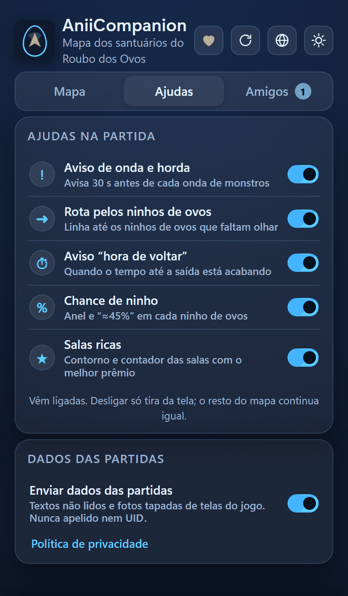
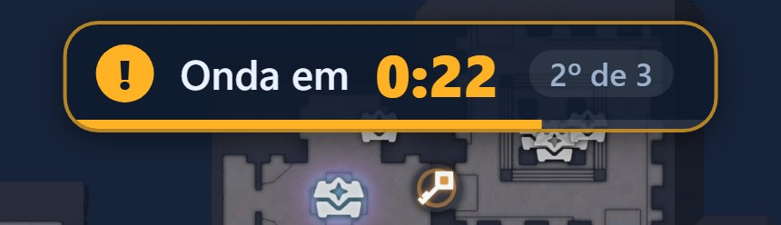
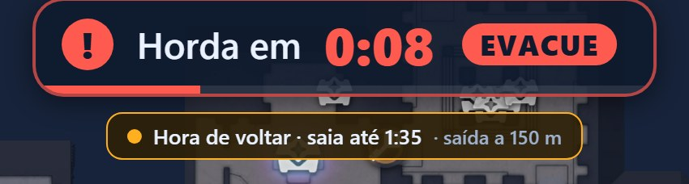
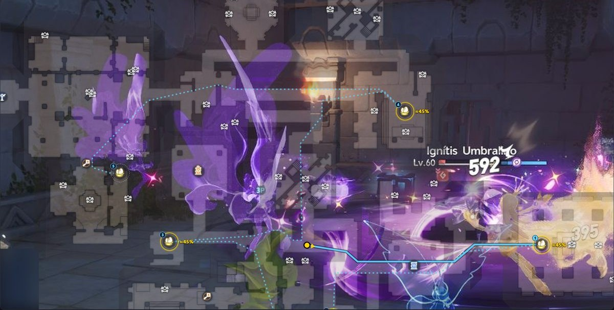
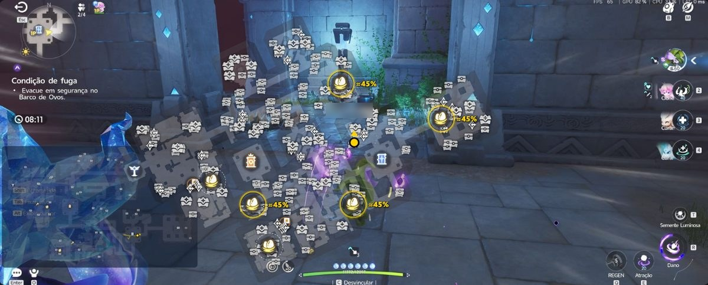
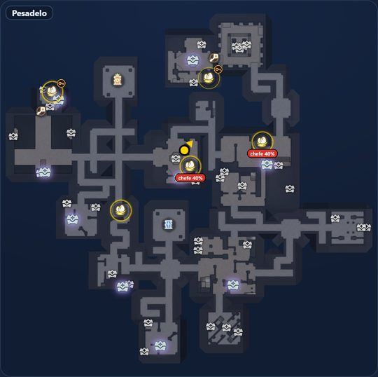
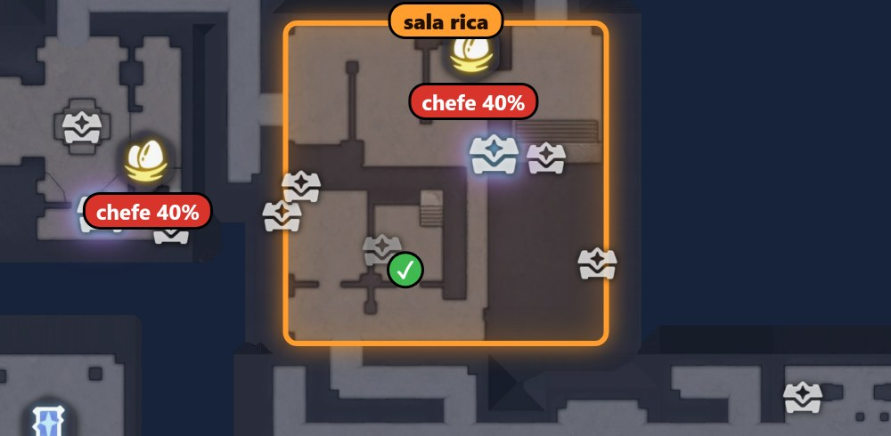
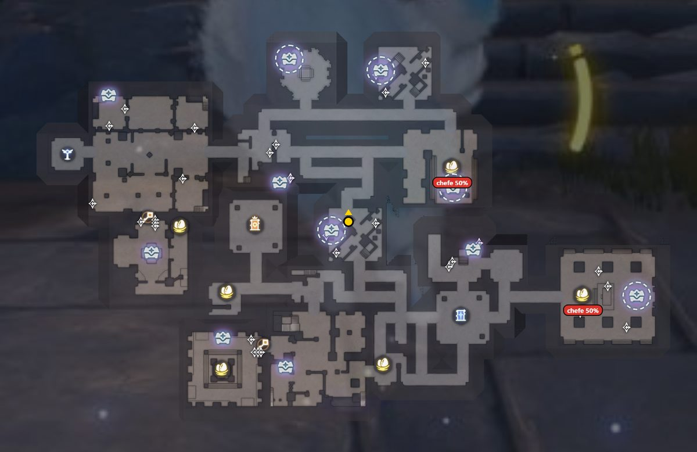
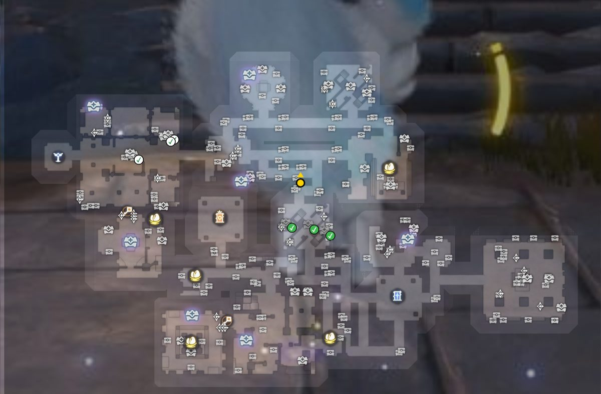

Ajudas da partida
Avisos e dicas que aparecem sobre o mapa. Cada um liga e desliga sozinho.
Antes de tudo
Como ligo e desligo as ajudas?
Todas vêm ligadas. Desligue só as que atrapalham.
- Abra a janela do AniiCompanionÉ a janela com as abas no alto. Ela fica aberta ao lado do jogo.
- Vá para a aba “Ajudas”Cada ajuda tem uma chave de liga e desliga.
- Toque na chaveAzul é ligada. A mudança é na hora e só tira a ajuda da tela. O resto do mapa não muda.

As cinco ajudas da aba
- Aviso de onda e horda. Avisa 30 s antes de cada onda de monstros.
- Rota pelos ninhos de ovos. Linha até os ninhos de ovos que faltam olhar.
- Aviso “hora de voltar”. Quando o tempo até a saída está acabando.
- Chance de ninho. Anel e “≈45%” em cada ninho de ovos.
- Salas ricas. Contorno e contador das salas com o melhor prêmio.
O quadro “Dados das partidas”, embaixo, não é uma ajuda: tem só a chave “Enviar dados das partidas”. Veja em Privacidade.
Tempo
Aviso de onda e horda
Uma contagem no alto da tela, 30 segundos antes de o jogo soltar mais monstros.


| O que é | O jogo manda três ondas de monstros. A terceira é a horda: hora de sair do santuário. |
|---|---|
| Aparece | Um cartão no alto, ao centro: “Onda em 0:27”. Na horda ele diz “EVACUE”. Com a bolsa, um baú ou um menu aberto, o mapa some, mas o aviso fica, até na janela pequena. O F1 esconde tudo. |
| Liga | Chave “Aviso de onda e horda”. |
Lá o horário vem com “≈” e borda tracejada, porque ainda não foi conferido numa partida real.
Caminho
Rota pelos ninhos
Uma linha pelos lugares de ninho que você ainda não olhou.

| O que é | Uma linha azul que passa pelos lugares de ninho ainda não vistos. Os números mostram a ordem. A parte pontilhada é o resto do caminho. |
|---|---|
| Aparece | Ninho dentro de sala da chave não entra na rota. Com a horda chegando, a linha vira o caminho até a saída mais próxima, em verde. |
| Liga | Chave “Rota pelos ninhos de ovos”. |
Hora de voltar
O aviso compara o tempo que falta no relógio com o tempo de andar até a saída mais próxima.
Ele aparece como “Hora de voltar” e, quando o tempo está acabando, como “Saia agora!”.
Liga na chave Aviso “hora de voltar”, que é separada da chave da rota.
A conta supõe um passo lento. Se você corre pelo santuário, saia um pouco depois do que o aviso diz.
Ninhos
Chance de ninho
Em cada partida o jogo sorteia onde há ninho. O app mostra a chance de cada lugar.

| O que é | A chance de existir ninho em cada lugar, nesta partida. A conta é refeita a cada ninho achado ou lugar olhado de perto. É aproximada, por isso o “≈”. |
|---|---|
| Aparece | Um anel em volta do lugar: quanto mais grosso e brilhante, maior a chance. Acima de 40% aparece o número, como “≈45%”. O selo “chefe N%” é a chance de o chefe estar naquela sala. Só existe do Difícil ao Caos. |
| Liga | Chave “Chance de ninho”. |
As cores do ninho
- Dourado: ainda pode ter ovo.
- Verde com ✓: revistado. O app vê o ✓ no minimapa do jogo, inclusive o do seu amigo.
- Cinza: você ficou uns 3 segundos perto, saiu da sala e passaram 30 segundos sem ovo nem ✓. O app deduz que o lugar está vazio.
Só passar correndo não muda a cor. Quando sobra um único lugar, o anel fica amarelo forte com “só falta este”. É conta por eliminação, não certeza.
Ninhos
Ninho em Sala da Chave
Vale gastar a chave? O app dá uma ideia.

| O que é | A chance de o ninho existir se você abrir a porta. Ajuda a decidir se vale gastar a chave. |
|---|---|
| Aparece | Um anel com uma chave pendurada e o número “≈50% com chave” ao lado. O valor muda conforme a sala. |
| Liga | Vai junto com a chave “Chance de ninho”. |
O valor depende da sala: ≈50%, ≈25%, ≈20% ou ≈15%. Achar ou não um ninho numa sala comum não muda o número da sala da chave.
Prêmios
Salas ricas
As salas com o melhor prêmio da partida.

| O que é | Cada partida tem 1 sala rica no Pesadelo e 2 no Caos. No Normal e no Difícil não há. O app só descobre qual é quando um baú raro da sala é aberto, por você ou por um amigo. |
|---|---|
| Aparece | Um contorno laranja com “sala rica” na sala e um contador no alto da tela, como “Salas ricas: 1 de 2” no Caos. |
| Liga | Chave “Salas ricas”. Ela vale também para o contador e o brilho do Prismana. |
Prêmios
Tipos de baú
Quais baús existem no mapa e onde cada tipo pode aparecer.

| O que é | O mapa mostra o tipo de cada baú. O jogo sorteia quais baús existem em cada partida, então o app mostra onde cada tipo pode estar. |
|---|---|
| Aparece | Ícones de baú no mapa. Com um filtro ligado, um anel tracejado marca o lugar que também pode ser outro tipo de baú. |
| Liga | Aba “Mapa”, “Ícones e rastro”, e “N de M ›” no ícone de baú. |
Prêmios
Item Prismana
Quais baús raros ainda podem dar o item nesta partida.

| O que é | Um baú raro com brilho ainda pode dar o Prismana nesta partida. A cada baú raro aberto, seu ou de um amigo, o app apaga o brilho dos que não podem mais. |
|---|---|
| Aparece | Brilho nos raros possíveis e um contador, como “Prismana: 12 lugares possíveis (2 com chave)”. O número muda a cada partida. |
| Liga | Vai junto com a chave “Salas ricas”. |
- Baú aberto ganha ✓. Cinza é o que você abriu. Colorido com ✓ branco é o que um amigo abriu.
- Baú fechado não aparece no minimapa do jogo. Passar pela sala não ensina nada ao app.